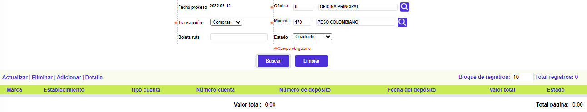

Captura de Movimientos oficina A través de esta opción el sistema permite el ingreso manual del movimiento de transacciones de Pago, Avances, Pago de impuestos y Compras o consumos realizados por los clientes en los establecimientos. Adicionalmente, cuenta con la opción Detalle para la consulta de los movimientos cuando por efecto de errores en la captura o malas liquidaciones del movimiento, éste queda descuadrado, requiriendo de una autorización para ser procesado en la operación diaria. El procedimiento para capturar el movimiento es el siguiente: una vez se despliega el formulario se debe ingresar el código de la oficina o sucursal de la que se va a capturar movimiento, sumado a la transacción y la moneda, se escoge la opción adicionar y se ingresan los datos El formulario contiene las opciones Eliminar, Adicionar y Detalle. Adicionalmente, cuenta con un filtro inicial de búsqueda y la opción Comprobantes . Adicionar: De acuerdo a lo que se haya seleccionado en la opción Transacción, el sistema muestra el ingreso manual del movimiento de transacciones de Compras, Avances, Impuestos, y Pagos. 
Detalle: Si el usuario invoca la opción Detalle se despliega el siguiente formulario. En él se puede consultar también la opción de localización, a través del globo ubicado en la parte superior derecha.
Comprobantes: Conjunto de datos que detallan cada uno de los vouchers o comprobantes asociados a cada consignación. Cuenta con las opciones de Actualizar y Detalle.
Actualizar: Si el usuario invoca la opción Actualizar se despliega un nuevo formulario en el cual los únicos campos modificables son: Número tarjeta, Número comprobante, Fecha comprobante, Número autorización, Plazo, y Causal.
Igualmente se pueden invocar los campos de la opción de localización, aunque ninguno de ellos es modificable.
|